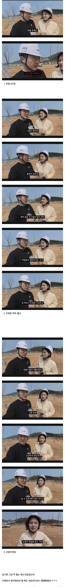

참고로 오징어게임 총 제작비(1,2,3시즌)가 1300억 ㅋㅋㅋㅋㅋ

참고로 오징어게임 총 제작비(1,2,3시즌)가 1300억 ㅋㅋㅋㅋㅋ
걍 크게 아르떼뮤지엄같은거 하나 만들어 놓고 섬분위기 쫙 하는거 했으면 대박 났다. 진짜.
바다 느낌 살리고 여수 밤바다 넣고
아르떼 뮤지엄 강릉에 있는거 큰거 하나 만드는대 약 100억~200억정도 듬. 크기에 따라 달라지겠지만..
있어 여수에
아 있구나... 그거 비슷하게 만들어도 좋은대.. 그러면..;;
절대 재활용은 안하지롱
김선태 난놈은 난놈이다 아이디어 진짜 좋네;;;다른건 그렇다쳐도 오징어게임했으면 어떻게 됐을지 모름
안전사고만 조심하면 흥하긴 오지게 흥했을지도 ㅋㅋㅋ
상금 100억 줬으면 전세계에서 왔지
토목건축시설 이런거로 해야 잘 못알아보고 남겨먹는데
저런거는 털면 비로나오잖아 맥주 500cc, 단가 5만원 이러면 방구석 개붕이도 잡아낸다고
일단 토목으로 챙긴돈을 감추려면 뭔가 있어보여야 하니
사람들을 많이 모으려면 정직하게 지출도 해야겠지 ...
진짜 맥주 무제한으로 풀어서 뭐 한 10만리터 해봐야 3억 언저리인데
여수가 10만리터 쏜다 !! 해서 며칠 하면 10만명 모인다 ㄹㅇ ㅋㅋ 오비나 롯대 좋잖아 ㅅㅂ
후원받아서 맥주 무제한으로 풀어버리면 개흥하긴 하겠다 ㅋㅋ
섬 축제 기념 고래 필굿 무한리필
진짜로 맥주회사 협찬을 받던가 아니면 맥주를 직접구입해서 섬맥주 축제 열었으면 지금보다 흥했을거다 ...
포터 뱃놀이는 공연하는사람들은 하루죙일하고 8만원이랬음 포터 뱃놀이 기획한놈을 욕해야지 공연자들 욕하믄 안댐
오리배라도 설치하지..
와 맥주 무제한 하면서 오징어 게임 참가. 그리고 탈락자들끼리 패자부활전하면서 부킹나이트 이벤트까지... 개알차네.
맥주 무제한제공하면서 오징어게임 했으면 진짜 흥행하긴 하겠다
몇명은 진짜로 섬에서 못 빠져나올듯
근처 엑스포건물있음에도 슈킹할려고 새로 뭔가 지은게
존나 역하다 그냥
애초에 시골촌동네에서 뭔가 큰 행사를 유치하려고 발악하는 이유가 슈킹해쳐먹기 좋아서 그런거임 ㅋㅋㅋ
주최측에서는 행사 성공여부에는 아예 관심없음
한탕 크게 해먹고 방구석에서 다음엔 뭘로 해쳐먹을지 고민하고 있을걸?
어짜피 섬과 관련된주제는 ㅈ도없으니 저런거라도 햇으면 욕 덜처먹었을텐데
난 여수하면 여수밤바다 그 조명에 어쩌구 노래밖에 생각안남
심지어 그나마 온 축제 음식 차량들
전기 못써서 걍 접고 나갔다며ㅋㅋ
맥주 무제한 풀고 주차장 앞 음주단속으로 세수하고 얼마나좋아
세금포터와 횡령의 돌
맥주 무제한에 부킹 나이트했으면
와시바 진짜 저기들어가면 못나왔겠는데? ㅋㅋ
솔직히 예산도 그렇게 많이 안들었을꺼고
해먹고 없는디 뭘 더 내놓는다는 말이죠?
김선태 야는 진짜. 아무리 생각해도 지 생각만 다 옳다고 하는데. 맞음. 김선태. 부킹나이트, 와우야 ~~ 섬과 섬의 만남.. 여자와 남자의 만남